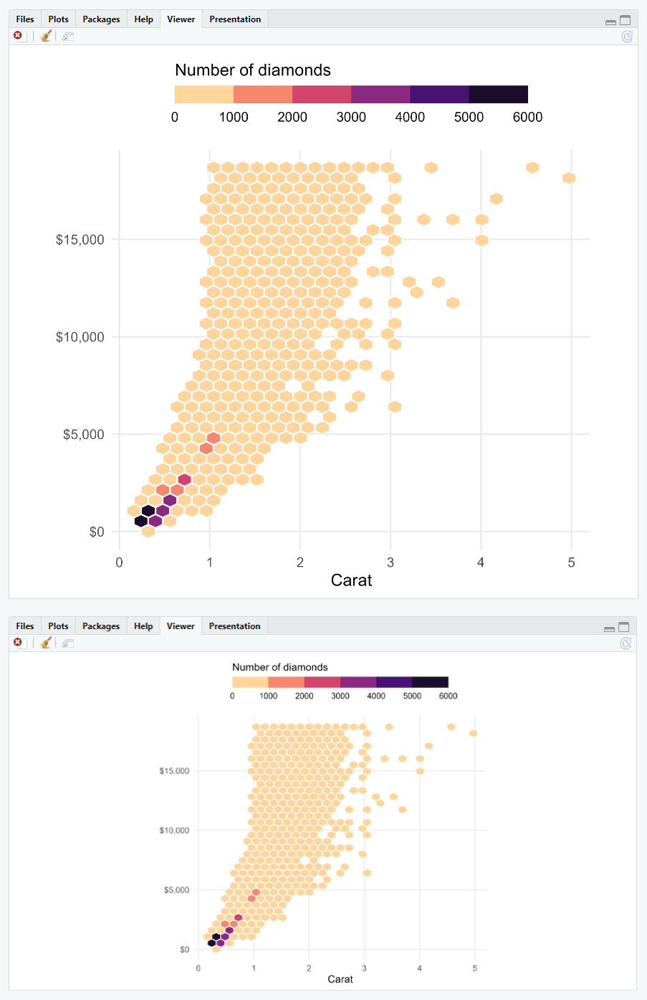

There are other pretty cool features when recording your ggplot output with the camcorder that improve the workflow with ggplot2:
- you don’t need to run
ggsave()every time after yourggplot()call - you can inspect the plot in the given dimensions inside the RStudio IDE
Omit Running and Typing ggsave()
That is the obvious feature: as camcorder saves a file
with the given specifications in the given directory every time
ggplot() is called you don’t have to run
ggsave() after a ggplot() function call.
Also, you don’t need to type or copy-paste and modify multiple
ggsave() snippets which e.g. avoids overwriting your
previous plot by default and keeps your code clean.
If you want to keep your plot files after the session, set the
dir in gg_record to a permanent directory
(instead of a temporary directory as in our examples).
Inspect the Final Plot Directly with Specified Dimensions
An often raised question is the responsive behavior of the
Plots pane in the RStudio IDE. The dimensions used in that
pane rely on the window size and are not at all related to any
width and height in your script. That leads to
the annoying user experience that one spends tremendous time on styling
the size of geometries and theme elements—but once saved everything
looks differently and likely off.
As camcorder is saving a plot file anyway, we make use
of that and display the saved file in the Viewer pane of
the RStudio IDE. Since the image was saved with the previously custom
settings, the dimensions of the plot shown here matches exactly as you
would use the same settings in a ggsave() call.

Note how the size of the geometries and elements stays the same independently of the window size and aspect ratio.